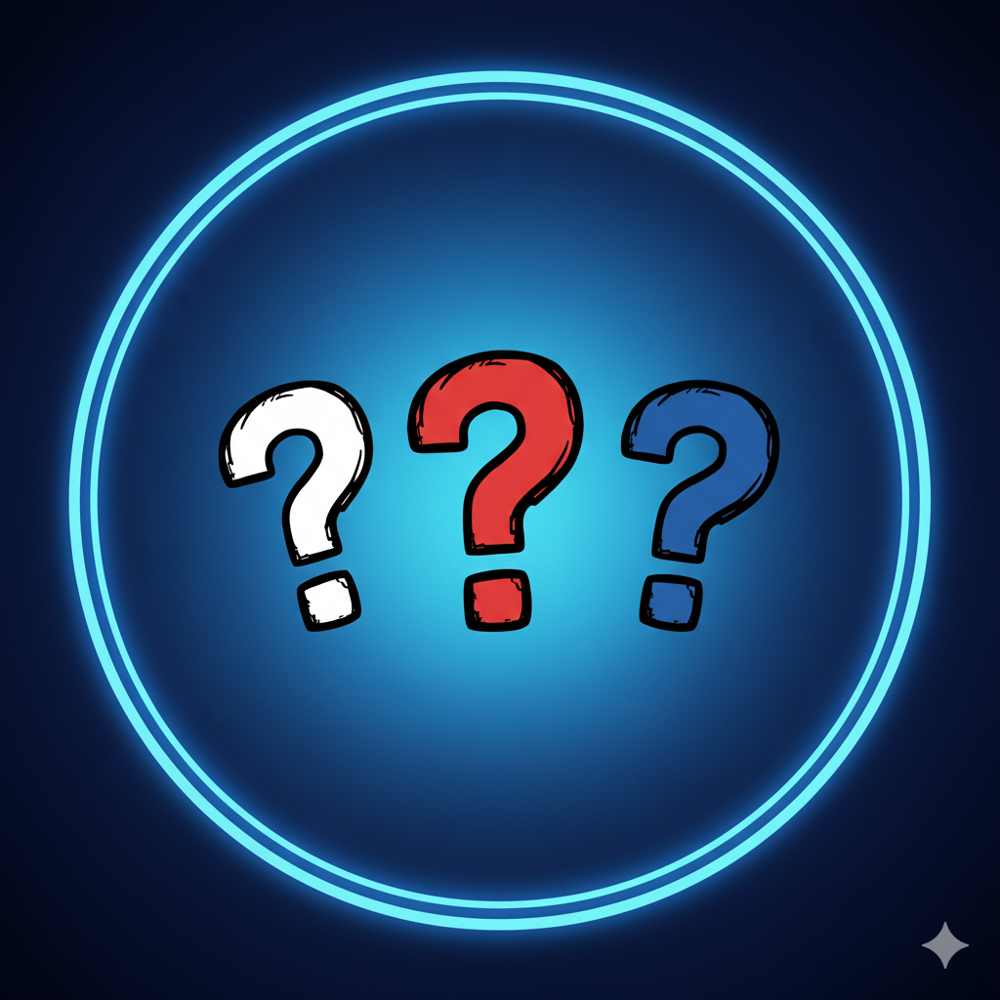
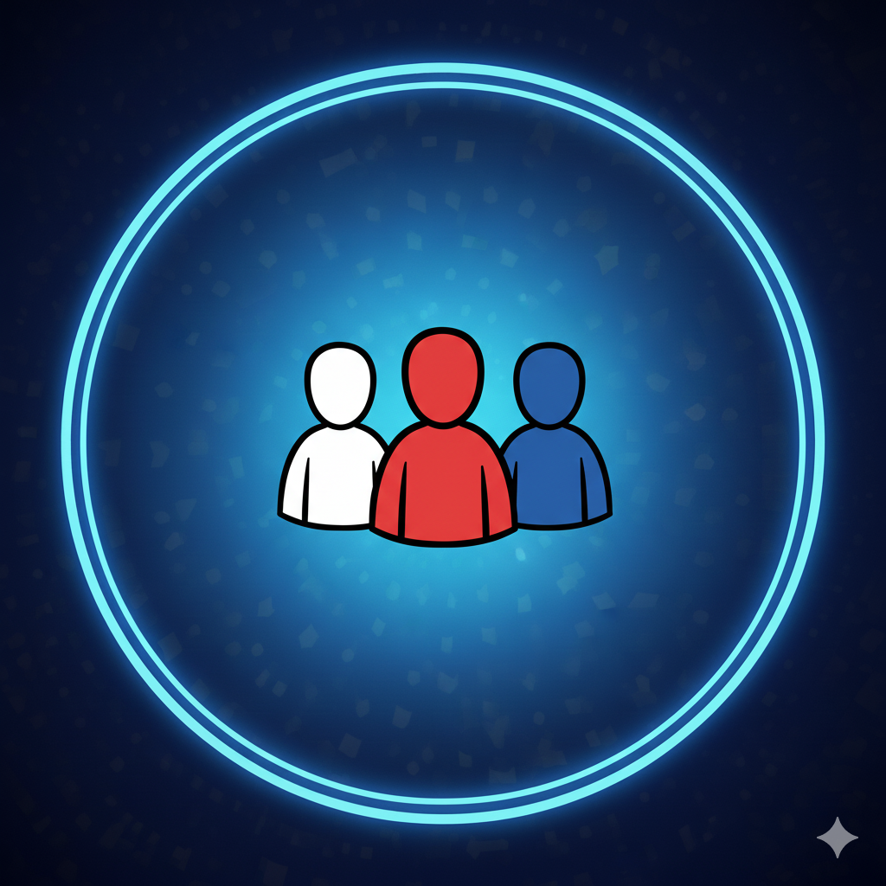
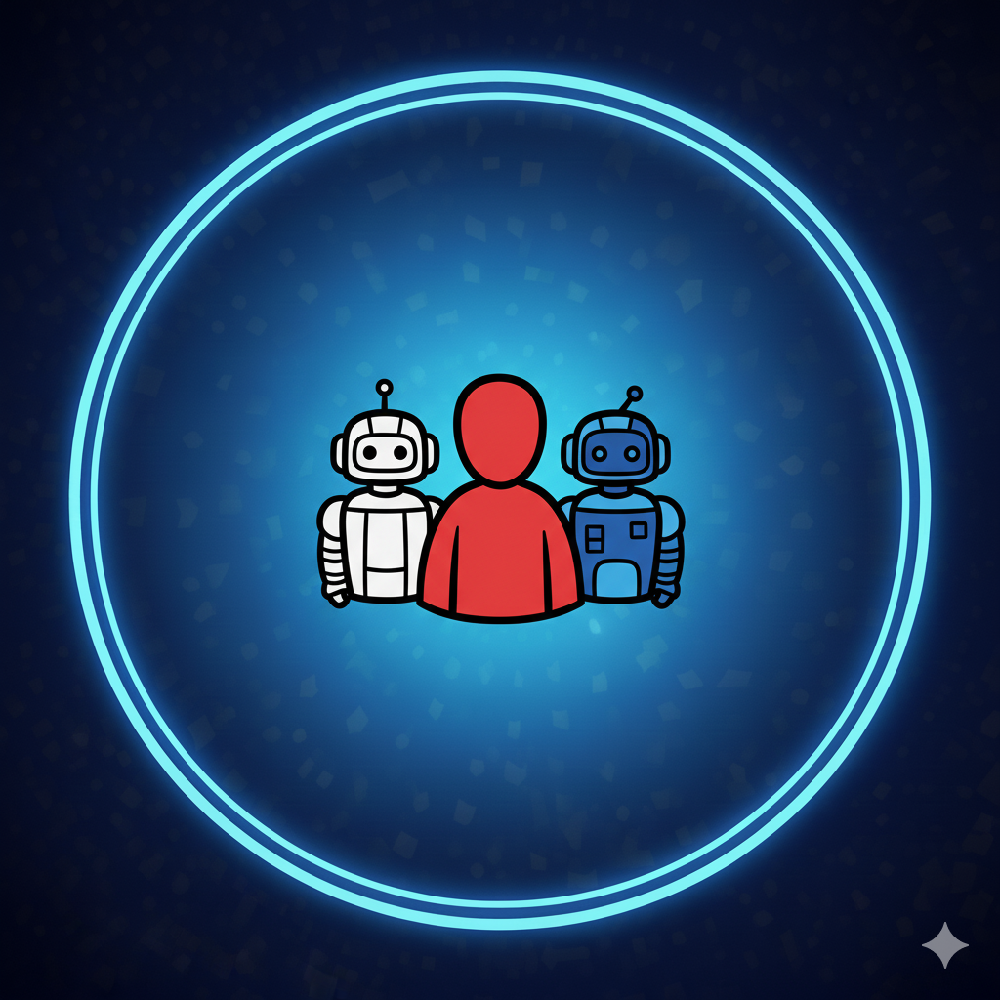
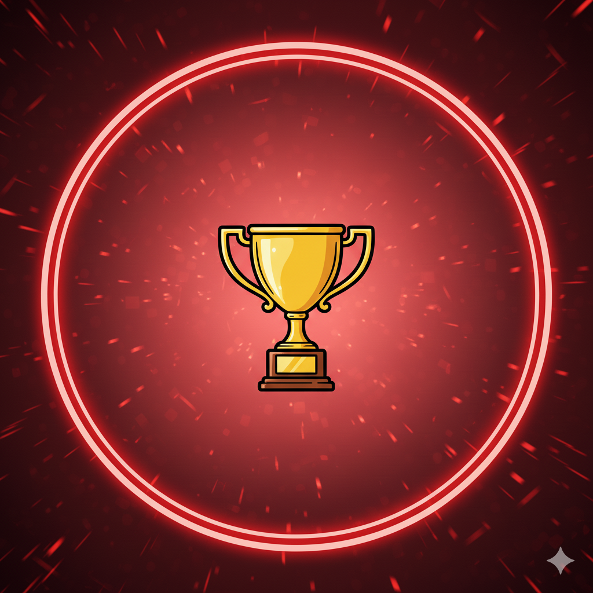

01
RYCHLÁ HRA
Náhodní soupeři
Najdeme ti dva hráče a hra může začít.
HLAVNÍ PORTÁL
Jedna hra, čtyři způsoby soupeření. Vyber si, jak chceš dnes bojovat o mapu.
POKRAČOVAT
Poslední tři zápasy: 1. · 2. · 1. místo. Do postupu ti zbývá 258 bodů.

RYCHLÁ HRA
Najdeme ti dva hráče a hra může začít.

SOUKROMÁ HRA
Vytvoř místnost nebo se připoj pomocí kódu.

TRÉNINK
Hraj vlastním tempem a piluj slabé kategorie.

SEZÓNA I
Stoupej divizemi, sleduj formu a buduj dlouhodobý profil.
TVOJE AKTUÁLNÍ ÚROVEŇ
Drž se mezi nejlepšími, sbírej ligové body a probojuj se do vyšší divize.
AKTUÁLNÍ DIVIZE
FORMA
ŽEBŘÍČEK
TENTO TÝDEN
HRA S PŘÁTELI
Všechno důležité na jedné obrazovce, bez zbytečných kroků.
KÓD MÍSTNOSTI
Sdílej kód nebo odkaz. Hra se spustí, až budou připraveni všichni tři hráči.
PRAVIDLA
NASTAVENÍ
Jen volby, které skutečně něco mění. Zbytek necháváme hře.
OBECNÉ

Herní náhled je pouze vizuální. Barvy hráčů, mapa a herní významové barvy zůstávají ve všech návrzích stejné; mění se pouze okolní UI a atmosféra.